Introduction
Vision
D-Eco Impact is an open source spatial ecological impact postprocessing model. This model is focused on aquatic application, suitable for coastal, river, lake, rural and urban applications. The model applies criteria rules to environmental conditions to evaluate the ecological state. These environmental conditions can be of varying detail (e.g. expert knowledge, measurements, or model output). The criteria applied can be of varying complexity (e.g., hard boundaries, gradual boundaries, multi variant relationships and AI deduced models). D-Eco Impact makes sure that the technical burden of applying these criteria to these environmental conditions is reduced. By reducing this technical burden, the following benefits can be achieved:
- It will be easier to make use of differing environmental data sources and change them when new environmental model output or better describing data sources become available, without changing the ecological criteria.
- More time can be spent on exploring the ecological criteria used and improving on knowledge that supports them.
- The effect of changing the ecological criteria or underlying environmental data on the ecological result can be easier explored (e.g. spatial/ temporal resolution, accuracy of the environmental data used, missing pressures, knowledge rules used) while comparing the modelled result with the current situation in the field.
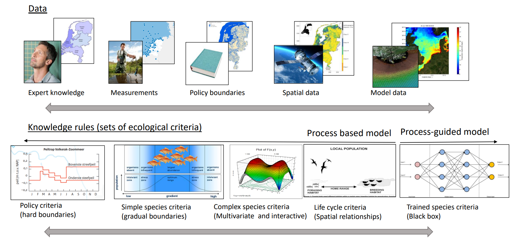
We distinguish between four types of users for D-Eco Impact:
- Users assessing the model results.
- Users working with the model using established functionality through the input file.
- Users expanding on the model by developing prototype functions on the existing framework.
- Developers or co-creators of the model adding accepted functionality that will be available to other users of the model.
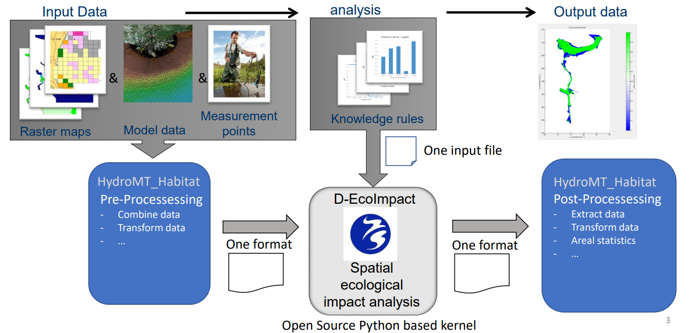
To support D-Eco Impact in providing one environmental input dataset and the analyses of the results we make use of the HydroMT_habitat plugin. HydroMT_habitat combines and prepares environmental data from various sources (e.g., expert knowledge, measurements, or model output) to one coherent dataset of environmental conditions, ready to be analyzed by D-Eco Impact. This dataset is a NetCDF file following the UGRID data format. developed for storing 1D, 2D and 3D (unstructured) data. HydroMT_habitat is also meant as a post-processing module, translating the D-Eco Impact result to a user required data format (e.g., shapefile, geopackage, GeoTiff, CSV) and providing statistical summaries (e.g. area created, change with previous scenario, most limiting environmental variable, least limiting environmental variable).
 result for ecological impact assessment. HydroMT_habitat takes care of the conversion between data source formats to one combined file in the UGRID NetCDF format. This file is provided to D-Eco Impact and based on the data encountered in the file this model will use the right approach to apply the provided criteria to the provided data. The result of D-Eco Impact, also in the UGRID NetCDF format, is translated to the user required format by using the module HydroMT_habitat. This module is also able to derive a statistical summary from the provided D-Eco Impact result (e.g.,area created, change with previous scenario, most limiting environmental variable, least limiting environmental variable).")
Installation
D-Eco Impact is a command line operated model. To use D-Eco Impact (currently) an installation of Python and the used libraries is required. This is best achieved by installing D-Eco Impact in a virtual environment.
Anaconda, miniConda or Visual Studio Code
Anaconda (elaborate functionality) and minicoda (minimum functionality) are environment managers often used in combination with Python. You can find the installation for either here:
Installation of D-Eco Impact with Anaconda or miniConda
-
Open your commandline (cmd) or conda prompt, and execute:
sh $ conda create -y -c conda-forge --name <env_name> python=3.11 -
Activate the newly created environment
sh $ conda activate <env_name> -
Move to the folder where you have placed the D-Eco Impact source code You can use cd ../ and cd
to move to the location or use windows explorer and type “cmd” + enter in the path bar. -
To install the required libraries Poetry is used. Use poetry 1.3 or higher: (installation instructions) If you prefer to install poetry with conda then we recommed to install poetry only to the base environment.
Activate base environment:
$ conda activate base
Install poetry using pip:
$ pip install poetry
Activate your created environment:
$ conda activate <env_name>
-
Poetry makes use of the poetry.lock and pyproject.toml (present in the D-Eco Impact folder) to find these required libraries. Execute the following command:
poetry installNB. If errors occur while installing the libraries, this might have to do with your administrative rights. Either start the cmd or conda promt “As administrator” or discuss this with your IT support. -
Now D-Eco Impact is ready to use. You can test this by executing one of the input yaml files. To execute use the following in the command prompt while your environment is active:
python main.py <your_input_file>.yaml
Installation D-Eco impact with Visual Studio Code and venv
- Install [Python version 3.11.2] (https://www.python.org/downloads/)
- Open Visual Studio Code.
- Press CRTL + Shift + P and type “Python: Create Environment” followed by enter, select “Venv”.
- Place the environment in the D-Eco Impact folder.
- Press CTRL + Shift + P and type “Python: Select interpreter” and select the newly created environment.
- In the terminal in Visual Studio Code execute the following command:
pip install poetry - In the terminal in Visual Studio Code execute the following command: poetry install
- Now D-Eco Impact is setup for use. You can test this by executing one of the input yaml files.
To execute use the following in the command prompt while your environment is active:
python main.py <your_input_file>.yaml
How to Cite
If you found D-Eco Impact useful for your study, please cite it as:
Weeber, M., Elzinga, H., Schoonveld, W., Van de Vries, C., Klapwijk, M., Mischa, I., Rodriguez Aguilera, D., Farrag, M., Ye, Q., Markus, A., Van Oorschot, M., Saager, P., & Icke, J. (2024). D-Eco Impact (v0.3.0). Zenodo. https://doi.org/10.5281/zenodo.10941913
Development D-Eco Impact
Workflow
Developer:
-
Move the jira issue you want to work on from "todo" into "in progress". (issue should be in the sprint, if not please discuss with product owner about changing the sprint scope).
-
Create a development branch from the main branch with the name based on that of the issue
feat[issue id] {summary of the issue}. For example: > feat[DEI-123] Improve functionality AThen switch your local copy to the development branch.
-
Commit the necessary changes with clear messages on what has been done.
-
Verify if all checks have passed (a green checkmark is shown, not a red cross).
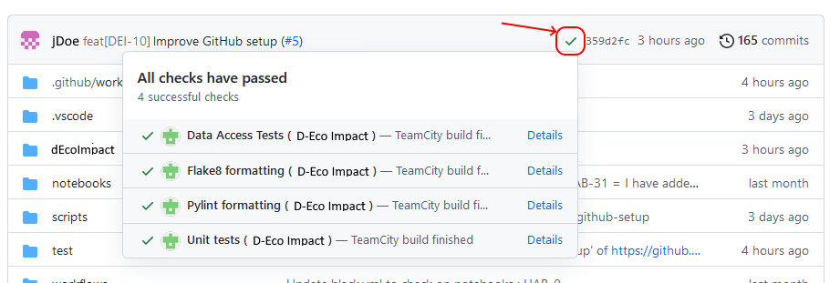 Is one or more checks fail, they must be fixed before continuing.
-
Once all checks pass, control if there are any changes in the main branch. If so, merge them to the development branch and fix all possible conflicts in the code, if any, and then go back to point 4 of this list.
-
Move the issue from In progress to In review and create a pull-request with the name of the branch previously assigned: > feat[issue id]{summary of the issue}.
Reviewer:
- Change the status of the issue from In review to Being reviewed. This should make you automatically the assignee.
-
Look at the development details of the issue. 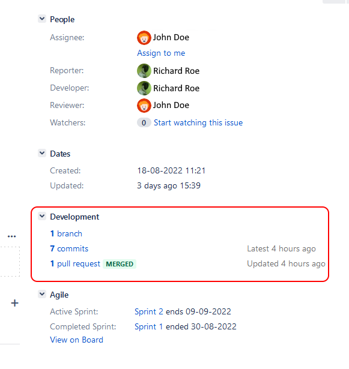
-
Open the linked pull-request in GitHub.
-
Change the reviewer to yourself if it didn't happen before, as indicated in point 1.

-
Go to the Files changed tab to see the modifications implemented for the issue.

-
Add your review comments (see comment on a PR documentation ).
Some points to analyse during the review are: * does the code work, including corner cases? * is the code in the right place? * is it readable? * is the code documented (all public methods and classes should have doc strings)? * are nameing conventions used properly? * is there any duplication of the code? * Is the code maintainable? * is the code covered by tests? * are all tests and checks green? * are the commit messages clear enough and do the satisfy the conventions?
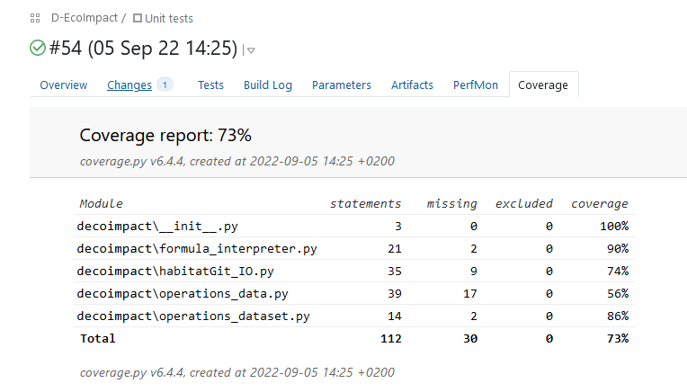 7. Set the status of the issue (comment, approve or request changes). 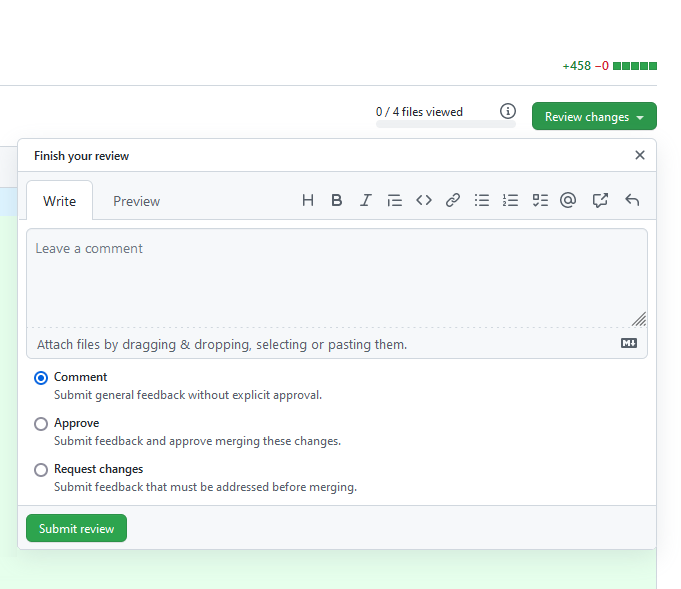 1. Change the status if the issue in Jira corrspondingly:
- Approved -> In Test
- Request changes -> To do
- Comment -> In review (with the developer as assignee).
Tester:
-
Change issue status from "in test" to "being tested". This should make you the assignee.
-
For a bug or improvement, check out the main branch and try to reproduce the issue or to get familiar with the previous functionality.
-
Change your local check-out to the development branch (from which the pull-request was created).
-
Test now the new functionality or bug fix by running the main script from python in a clean python environment.
-
Try to think of situations or conditions that may have been forgotten to implement properly, and test these as well.
-
Add comments in the issue with your findings (ok or not because ...). Describe enough in detail so that other people can easily reproduce any problems found. If needed, provide any required (additioonal) data.
-
Move the issue in Jira to the new corresponding state:
- If the test is ok, to Merge.
- If the test is not ok, move to To do.
If test is succesful
-
Go to pull request on GitHub.
-
Check if there will be merge conflicts (shown by GitHub) and if the development branch is up to date with the main branch.

- If any merge conflicts are reported, then check with developer to resolve the merge issues.
- If the branch does not have any merge conflicts and is not up to date -> press the update branch button.
-
If the branch is up to date and does not have merge conflicts you can merge the pull request to the main branch.
-
Change issue status in jira from "merge" to "validate".
-
Change your local checkout to the main branch and do a few checks to see if the merge was correct.
-
If the merge was successful, change issue status in jira from "validate" to "done".
Agreements
Coding:
- We use the PEP8 style guide for python development.
- We use typing where possible.
- We avoid using global variables.
-
We use encapsulation by only making the necessary imports and variables public.
-
For testing, we use the pytest module.
- For checking the style guide, we use flake8 and pylint.
-
For managing external dependencies, we use poetry (.toml file).
-
We prefer to use VS Code for development (sharing settings using vscode folder) with the following plugins:
User manual ↵
Visualization of input and output data
There are multiple ways that the data used and produced can be visualized. Here the use of Panoply to explore the data construct, Quickplot for 2D horizontal and 3D vertical visualization and QGIS for spatial relevant visualization are discussed.
Panoply
Panoply is a NetCDF viewer developed by NASA GISS. Panoply can be downloaded here.
Panoply is useful for exploring the content of NetCDF files. It allows the user to see which variables are present in the file, over which dimensions these variables contain values (e.g. x, y, z, time) and what metadata is supplied with each variable. Especially when you have gotten a NetCDF file that you are not familiar with on which data it contains it can be useful to open it first with Panoply.
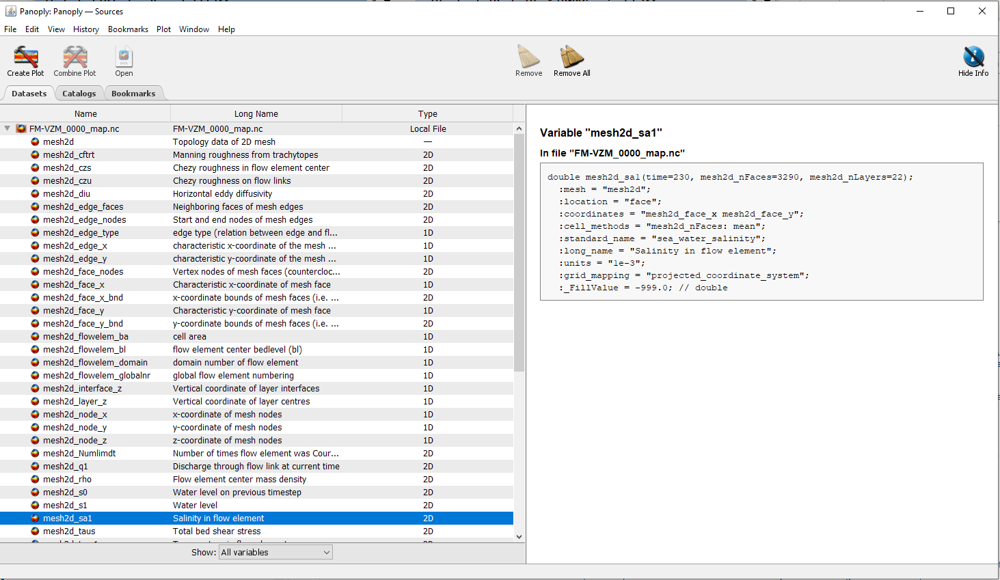
Quickplot
Quickplot is a Deltares visualization tool used amongst others for Delft3D 4 and Delft3D-FM models. Intern Deltares the latest version of Quickplot can be gathered here:
Quickplot is also co-delivered with the installation of one of the Delft3D suites.
Quickplot allows the visualization of UGRID NetCDF files, both in the horizontal, over time and in the vertical (for 3D models).
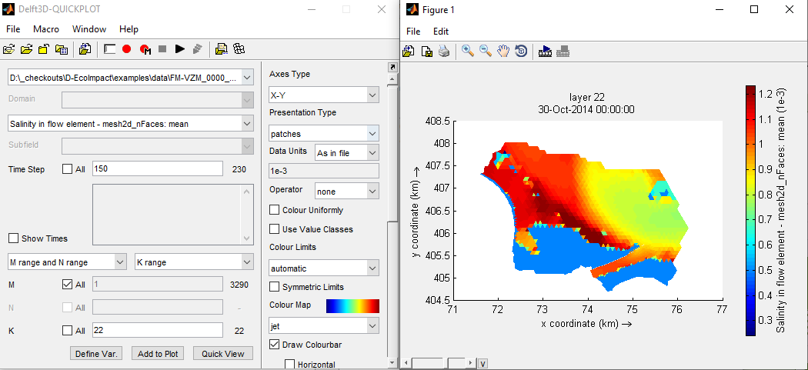
QGIS
QuantumGIS (QGIS) is open source free ware GIS software. The latest version of QGIS can be downloaded here
QGIS can handle 2D Mesh data directly. See the QGIS 3.28 documentation here. QGIS does however not recognize our newly created time axes (e.g. time_year, time_month after using the D-Eco Impact "time_aggregation_rule").
When it comes to 3D mesh data a Deltares plugin developed by Jan Mooiman (QGIS_Qmesh) can perform the visualisation. Also visualization through time is made easy with the QGIS_Qmesh plugin. Intern Deltares the latest version of this plugin can be gathered here: needs to be externally compiled here.
When Mesh data is loaded directly in QGIS the spatial relevance can be easily displayed using the plugin QuickMapServices > OSM layer.
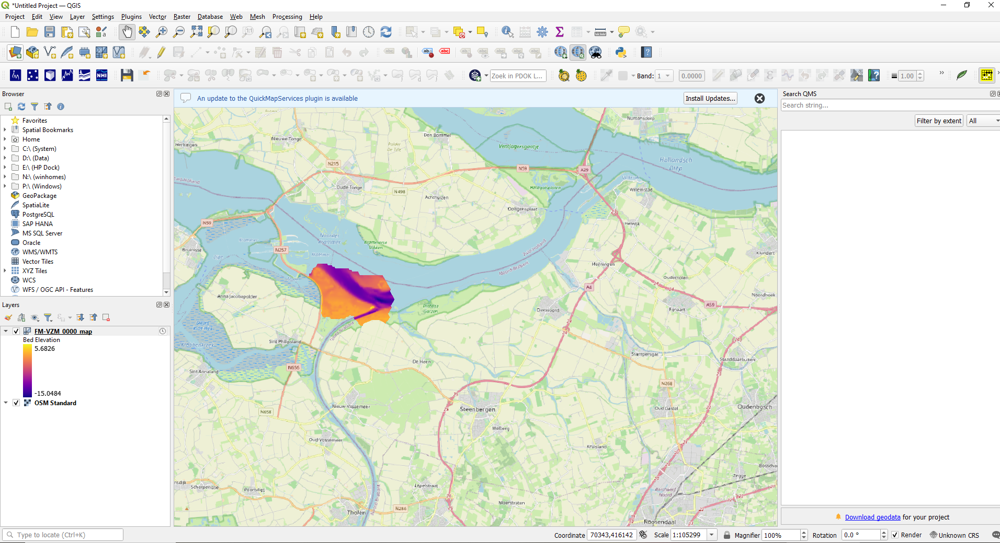
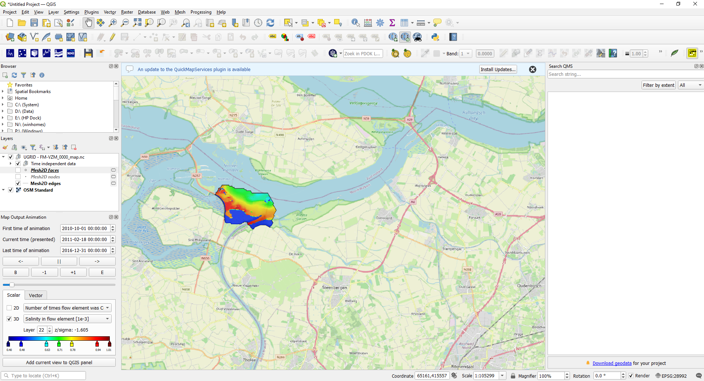
Structure of the model input file and functionality
D-Eco Impact is steered through a YAML input file. This input file informs the model which data to use, what ecological knowledge rules to apply and where to write the output data. The easiest way to edit these YAML files is by using Notepad++. When starting with your first application with D-Eco Impact, make use of earlier models to setup your YAML input file and edit from there. When running the YAML file with D-Eco Impact, the model will inform you if there are inconsistencies in the file provided.
Importing and exporting data
Importing and exporting data is always arranged in the input-data and output-data header in the YAML file.
version: …………………….
input-data:
…………………….
rules:
…………………….
output-data:
…………………….
In the input data the variables that are present in the input data provided through “filename” are selected for use. It is possible to filter the input data by providing a start date or end date (format: "dd-mm-yyyy"); this is optional. The variables that are used can be selected under “variable_mapping”. Here you are also able to rename variables as the name used for storage is often cryptic.
At output data the location where the output file needs to be written can be provided through “filename”. In this output file only variables that have been used from the input data and variables that have been created in the model are stored. It is possible to reduce the file size with the optional parameter "save_only_variables", which can take the name of one or several variables. The model needs at least one rule under “rules” to execute.
#FORMAT
version: <D-Eco_Impact_version_nr>
input-data:
- dataset:
filename: <path_to_file_including_file_name_and_type>
start_date: "<start_date>"
end_date: "<end_date>"
variable_mapping:
<variable1_input_file>: "<variable1_name_in_model>"
<variable2_input_file>: "<variable2_name_in_model>"
………
rules:
………
output-data:
filename: <path_to_file_including_file_name_and_type>
save_only_variables: <variable, or list_of_variables>
#EXAMPLE : Reading and writing an example model of the Volkerak-Zoommeer
version: 0.1.5
# Mapping: mesh2d_sa1 : Salinity (PSU)
# mesh2d_s1 : Water level (m NAP)
# mesh2d_waterdepth : Water depth (m NAP)
input-data:
- dataset:
filename: examples/data/FM-VZM_0000_map.nc
start_date: "01-01-2011"
end_date: "31-12-2015"
variable_mapping:
mesh2d_sa1: "salinity"
mesh2d_s1: "water_level"
mesh2d_waterdepth: "water_depth"
rules:
- multiply_rule:
name: make variable test
description: Make a variable called test for testing purposes
multipliers: [1.0]
input_variable: water_depth
output_variable: test
output-data:
filename: examples/data_out/results_test8c.nc
save_only_variables: test
Functionality
The functionality is always arranged in the form of rules under the rules header in the yaml file.
version: …………………….
input-data:
…………………….
rules:
…………………….
output-data:
…………………….
The output of the following functionalities has been shown for a section of the Lake Volkerak 3D hydrodynamic model in the Netherlands. This hydrodynamic model output contains 6 years of data (2011 – 2016), with a timestep of 10 days. The 3D hydrodynamic model has been setup with 22 vertical layers and 3290 horizontal flexible mesh grid cells.

Rules
Multiply rule
- multiply_rule:
name: <name_of_rule_in_text>
description: <description_of_rule_in_text>
multipliers: [<value_to_multiply_with>]
input_variable: <one_input_variable_name>
output_variable: <one_output_variable_name>
- multiply_rule:
name: <name_of_rule_in_text>
description: <description_of_rule_in_text>
multipliers_table:
- ["start_date", "end_date", "multipliers"]
- [<DD-MM>, <DD-MM>, [<value_to_multiply_with>]]
- [<DD-MM>, <DD-MM>, [<value_to_multiply_with>]]
input_variable: <one_input_variable_name>
output_variable: <one_output_variable_name>
The multiply rule allows for multiplication of variables. This could be used for unit transformation (e.g., salinity to chloride) or scenario creation (e.g., water level 80% of existing value). The rule operates on all cells both 3D (in horizontal as vertical) as in the time axes. The same dimensions are returned at the output variable. The rule needs to be applied to an existing variable. A new variable is created when the rule is executed.
When using the multiply rule with a start and end date (or multiple start and end dates) all periods that are not covered will be set to NaN. In this way the multiply rule can also be used as a filter in time. NaNs are ignored by any further calculations (for example the time_aggregation_rule).
#EXAMPLE: Salinity (psu) to chloride (mg/l) in a freshwater environment.
- multiply_rule:
name: Salinity to chloride
description: Converts salinity (psu) to chloride (CL- mg/l) for fresh water environments
multipliers: [0.0018066, 1e5]
input_variable: salinity
output_variable: chloride
- multiply_rule:
name: Select only the summer half year for chloride
description: Select only the summer half year for chloride as this is important for plant growth
multipliers_table:
- ["start_date", "end_date", "multipliers"]
- ["15-04" , "15-09" , [1.0]]
input_variable: chloride
output_variable: chloride_grow_period
 has been translated in chloride (in mg/l, right-hand side) while maintaining the time, face and layer dimensions.")
Layer filter rule
FORMAT
- layer_filter_rule:
name: <name_of_rule_in_text>
description: <description_of_rule_in_text>
layer_number: <integer_nr_of_layer>
input_variable: <one_3D_input_variable_name>
output_variable: <one_output_variable_name>
The layer filter rule allows for the extraction of a layer from 3D variables. This could be used for extracting the top layer or bottom layer (e.g., from a multi layered model result). The rule operates on all layers in a 3D variable (in the vertical) as in the time axes and returns a 2D result with the time axes intact. The rule needs to be applied to an existing 3D variable. A new 2D variable is created when the rule is executed.
#EXAMPLE : Extracts the chloride concentration at surface.
- layer_filter_rule:
name: Extract chloride at surface
description: Extracts the chloride concentration at surface
layer_number: 22
input_variable: chloride
output_variable: chloride_top_layer
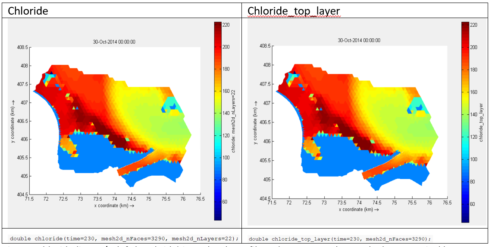
Time aggregation rule
FORMAT
- time_aggregation_rule:
name: <name_of_rule_in_text>
description: <description_of_rule_in_text>
operation: <statistic_opperation_applied>
time_scale : <time_aggregation_applied>
input_variable: <one_input_variable_name>
output_variable: <one_output_variable_name>
The time aggregation rule allows for calculating a statistical summary over the time axes of 3D and 2D variables. This could be used for calculating the maximum value over a year (e.g., for water level) or the minimum value over a month (e.g., oxygen concentration). The rule operates both on 3D variables and 2D variables as long as they have a time axis and returns a 3D or 2D result depending on input with the statistic calculated for a new time axis (e.g., year or month). Operations available: Add, Average, Median, Min, Max, period statistics, Stdev and Percentile(n). When using percentile, add a number for the nth percentile with brackets like this: percentile(10). Stdev calculates the standard- deviation over the time period. Under period statistics are explained further in the text.
Time aggregation available: Year, Month
The rule needs to be applied to an existing 2D/3D variable with time axis. A new 2D/3D variable with new time axis is created when the rule is executed. With a year timestep the result is written to the last day of the year, with a month timestep the result is written to the last day of the month per year.
#EXAMPLE : Calculate the maximum water level in a year.
- time_aggregation_rule:
name: Maximum water level year
description: Get maximum water level in a year
operation: MAX
time_scale: year
input_variable: water_level
output_variable: MAX_water_level_year
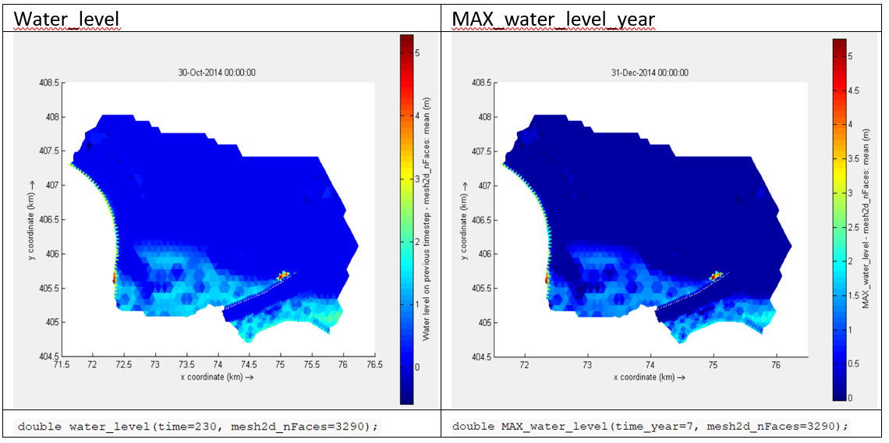
Period statistics: Time aggregation rule with COUNT_PERIODS, AVG_DURATION_PERIODS, MIN_DURATION_PERIODS and MAX_DURATION_PERIODS
When the operation type period statistics is used, the user needs to make sure that the input data is always consisting of only 1 and 0. If there is no such layer, the user can make a combination of for example the classification rule together with the time aggregation rule. For example, water depth can be used to check whether the cells are dry or not (this can be done with a classification rule) and with the COUNT_PERIODS operation type in the time aggregation rule the number of consecutive periods within a year or month can be calculated (nr). AVG_DURATION_PERIODS, MIN_DURATION_PERIODS and MAX_DURATION_PERIODS take the respective statistic of the duration for those consecutive periods (duration).
#EXAMPLE:
Calculate the number of consecutive periods of dry time monthly
- classification_rule:
name: Classify dry time
description: Classify to 0 and 1 the dry time
criteria_table:
- ["output", "water_depth"]
- [0, ">0.10"]
- [1, "<0.10"]
input_variables: ["water_depth"]
output_variable: dry_time_classified
- time_aggregation_rule:
name: Count periods
description: Count periods
operation: COUNT_PERIODS
time_scale: month
input_variable: dry_time_classified
output_variable: COUNT_PERIODS_water_level_month
Step function rule
FORMAT
- step_function_rule::
name: <name_of_rule_in_text>
description: <description_of_rule_in_text>
limit_response_table:
- [ "limit", "response"]
- [<limit_value>, <response_value>]
- [<limit_value>, <response_value>]
input_variable: <one_input_variable_name>
output_variable: <one_output_variable_name>
The step function rule performs stepwise classification on the provided values of 3D and 2D variables time dependent arrays. This could be used for translating variables into classes (e.g., salinity classes based on salinity) or indicate suitable/unsuitable ranges (e.g., checking whether the water level falls between the maximum and minimum water level policy criteria). The rule operates both on 3D variables and 2D variables, independent of the time axes, and returns a binominal or classes in a 3D or 2D result, either with time axis, depending on input.
The rule needs to be applied to an existing 2D/3D variable with or without time axis. A new 2D/3D variable with or without time axis is created when the rule is executed.
#EXAMPLE : Salinity classes.
- step_function_rule:
name: Classify salinity
description: Make distinction between 0.0 – 0.5 , 0.5 – 1.2, 1.2 – 1.3 and >1.3 psu
limit_response_table:
- [ limit, response]
- [-999.0 , 0.0 ]
- [ 0.0 , 1.0 ]
- [ 0.5 , 2.0 ]
- [ 1.2 , 3.0 ]
- [ 1.3 , 4.0 ]
- [ 999.0 , 4.0 ]
input_variable: salinity
output_variable: salinity_class
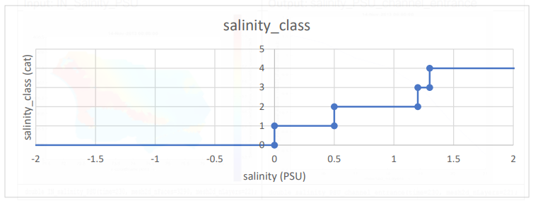
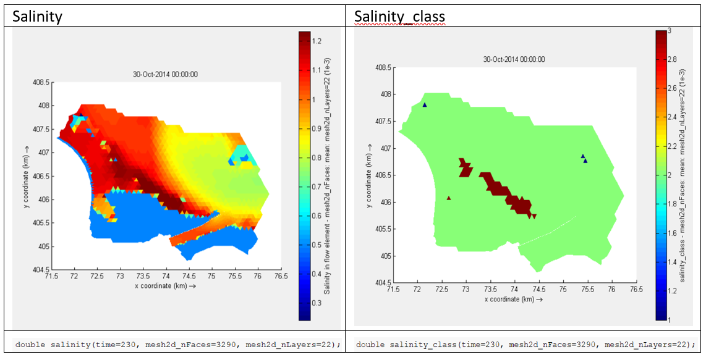
#EXAMPLE : Check if the water level falls within the range of -0.10 and +0.15 m NAP.
- step_function_rule:
name: Check water level policy
description: Check if water level is within -0.10 (minimum) and +0.15 (maximum) m NAP
limit_response_table:
- [ limit, response]
- [-999.0 , 0.0 ]
- [ -0.10 , 1.0 ]
- [ 0.15 , 0.0 ]
- [ 999.0 , 0.0 ]
input_variable: water_level
output_variable : water_level_policy
 is translated in a False (0) or True (1) category by comparing it with a boundary policy based on the shown relationship. The boundary is that the water level is not allowed to be lower than -0.10 m NAP and higher than 0.15 m NAP.")
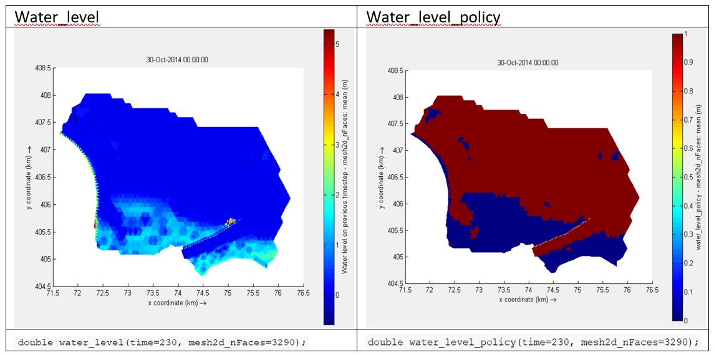
Response curve rule
FORMAT
- response_curve_rule:
name: <name_of_rule_in_text>
description: <description_of_rule_in_text>
response_table:
- [ "input", "output"]
- [<limit_value>, <response_value>]
- [<limit_value>, <response_value>]
input_variable: <one_input_variable_name>
output_variable: <one_output_variable_name>
The response curve rule performs a linear interpolation over the provided values of the variables of 3D and 2D variables time dependent arrays. This could be used for a fuzzy logic translation of variables into ecological responses to these variables (e.g., suitability for aquatic plants based on light availability). The rule operates both on 3D variables and 2D variables, independent of the time axes, and returns decimal or fractional values in a 3D or 2D result, either with time axis, depending on input.
The rule needs to be applied to an existing 2D/3D variable with or without time axis. A new 2D/3D variable with or without time axis is created when the rule is executed.
#EXAMPLE : Response of the habitat suitability of Long-leaf pond weed
# (Potamogeton nodosus) to water depth.
# Suitable between 0.0 – 2.0 m and highly suitable between 0.5 – 1.0 m
- response_curve_rule:
name: HSI Pond weed water depth
description: Reponse of Pond weed (Potamogeton nodosus) to water depth
response_table:
- ["input", "output"]
- [-999.0 , 0.0 ]
- [ 0.0 , 0.0 ]
- [ 0.5 , 1.0 ]
- [ 1.0 , 1.0 ]
- [ 2.0 , 0.0 ]
- [ 999.0 , 0.0 ]
input_variable: water_depth
output_variable: HSI_Pnodosus_water_depth
 is translated through a linear interpolation to show the suitability for P. nodosuse based on the shown relationship. The suitability is expressed in a fraction from 0.0 (unsuitable) and 1.0 (suitable).")
 is translated through a linear interpolation to show the suitability for P. nodosus (right-hand side) while maintaining the time, face and layer dimension. The suitability is expressed in a fraction from 0.0 (unsuitable) and 1.0 (suitable).")
Combine results rule
FORMAT
- combine_results_rule:
name: <name_of_rule_in_text>
description: <description_of_rule_in_text>
operation: <statistic_opperation_applied>
input_variables: [<list with_input_variable_names>]
output_variable: <one_output_variable_name>
The combine results rule combines the output of two or more variables to one output variable. The way this data is combined depends on the operation chosen. This could be used for adding mutual exclusive results (e.g., habitat suitability based on flow velocity and water depth) or asses difference between results (e.g., waterlevel and bathymetry to get the water depth).The rule operates one or multiple 3D variables or 2D variables, independent of the time axes, as long as these all have the same dimensions and returns a single 3D or 2D result, either with time axis, depending on input.
Operations available: Add, Subtract, Multiply, Average, Median, Min and Max
The rule needs to be applied to an existing 2D/3D variables with or without time axis. A new 2D/3D variable with or without time axis is created when the rule is executed.
#EXAMPLE : Calculate bathymetry over time
# This is just an example, there is a variable bed level without time (mesh2d_flowelem_bl)
- combine_results_rule:
name: Calculate bathymetry
description: Calculate bathymetry over time by adding water level and water depth
operation: subtract
input_variables: ["water_level","water_depth"]
output_variable: bathymetry_time
 and water depth (in m NAP, right-hand top side) are combined by subtracting to create the bathymetry over time (right-hand bottom side) while maintaining the time and face dimension (layer dimension is not present in this example, but would be maintained).")
 and water depth (in m NAP, right-hand top side) are combined by subtracting to create the bathymetry over time (right-hand bottom side) while maintaining the time and face dimension (layer dimension is not present in this example, but would be maintained).")
Formula rule
FORMAT
- formula_rule:
name: <name_of_rule_in_text>
description: <description_of_rule_in_text>
formula: <statistic_opperation_applied>
input_variables: [<list with_input_variable_names>]
output_variable: <one_output_variable_name>
With the formula based rule multiple variables can be combined in a flexible way. Operations that are supported are the standard operators.
The rule needs to be applied to an existing 2D/3D variables with or without time axis. A new 2D/3D variable with or without time axis is created when the rule is executed.
#EXAMPLE : Calculate bathymetry over time
# This is just an example, there is a variable bedlevel without time (mesh2d_flowelem_bl)
- formula_rule:
name: Calculate bathymetry
description: Calculate bathymetry over time by adding water level and water depth
formula: water_level + water_depth
input_variables: ["water_level","water_depth"]
output_variable: bathymetry_time
A lot of operators are supported with the formula based rule. Given two variables "x" and "y", formulas can be implemented for the following operators:
| Operator | Name | Example |
|---|---|---|
| + | Addition | x + y |
| - | Subtraction | x - y |
| * | Multiplication | x * y |
| / | Division | x / y |
| % | Modulus | x % y |
| ** | Exponentiation | x ** y |
| // | Floor division | x // y |
When a formula results in a boolean, it will be converted to a float result. Meaning that True = 1 and False = 0. Comparison, logical, identity, identity and bitwise operators are supported:
| Operator | Name | Example |
|---|---|---|
| == | Equal | x == y |
| != | Not equal | x != y |
| > | Greater than | x > y |
| < | Less than | x < y |
| >= | Greater than or equal to | x >= y |
| <= | Less than or equal to | x <= y |
| // | Floor division | x // y |
| and | Returns True if both statements are true | x < 5 and x < 10 |
| or | Returns True if one of the statements is true | x < 5 or x < 4 |
| not | Reverse the result, returns False if the result is true | not(x < 5 a |
| is | Returns True if both variables are the same object | x is y |
| is not | Returns True if both variables are not the same object | x is not y |
| in | Returns True if a sequence with the specified value is present in the object | x in y |
| not in | Returns True if a sequence with the specified value is not present in the object | x not in |
| Operator | Name | Description | Example |
|---|---|---|---|
| & | AND | Sets each bit to 1 if both bits are 1 | x & y |
| | | OR | Sets each bit to 1 if one of two bits is 1 | x | y |
| ^ | XOR | Sets each bit to 1 if only one of two bits is 1 | x ^ y |
| ~ | NOT | Inverts all the bits | ~x |
| << | Zero fill left shift | Shift left by pushing zeros in from the right and let the leftmost bits fall off | x << 2 |
| >> | Signed right shift | Shift right by pushing copies of the leftmost bit in from the left, and let the rightmost bits fall off | x >> 2 |
For more information on these operators click here.
(Multiple) Classification rule
FORMAT
- classification_rule:
name: <name_of_rule_in_text>
description: <description_of_rule_in_text>
criteria_table:
- [ "output" , <input_variable_name1>, <input_variable_name2>]
- [<response_value>, <criteria_range>, <criteria_range>]
- [<response_value>, <criteria_range>, <criteria_range>]
input_variables: [<list with_input_variable_names>]
output_variable: <one_output_variable_name>
The classification rule allows for the classification based on the range of one or multiple input vairables. The value range can be indicated in multiple ways. This rule can be used for indicating suitability (0 or 1) or specify categories (1,2,3 etc). The rule will start with the last given criteria range row and work upwards, hence overwriting is possible. Currently there is no check whether possible ranges have been missed or are overlapping.
The rule needs to be applied to an existing 2D/3D variables with or without time axis. A new 2D/3D variable with or without time axis is created when the rule is executed.
Criteria ranges available are:
| Criteria range | Example | Description |
|---|---|---|
| "-" | "-" | Value is not applicable to category, all is allowed |
| "criteria_value" | "5" | Value is exectly the criteria value (only applicable for integers) |
| ">criteria_value" | ">1" | Value needs to larger than criteria value |
| "<criteria_value" | "<0.5" | Value needs to be smaller than criteria value |
| ">criteria_value" | ">=1" | Value needs to larger than or equal to criteria value |
| "<criteria_value" | "<=0.5" | Value needs to be smaller than or equal to criteria value |
| "criteria_value1:criteria_value2" | "0.2:4" | Value needs to be equal or be in between criteria_value1 and criteria_value2 |
#EXAMPLE : Determine the suitability for aquatic vegetation based on classification
- classification_rule:
name: Classification for aquatic plants
description: Derive the classification for aquatic plants based on water depth, flow velocity and chloride levels
criteria_table:
- ["output", "MIN_water_depth_mNAP", "MAX_flow_velocity", "MAX_chloride"]
- [ 1 , "<0.10" , "-" , "-"] # too dry
- [ 2 , ">4.0" , "-" , "-"] # too deep
- [ 3 , "-" , "-" , ">400"] # too salty
- [ 4 , "-" , ">1.5" , "-"] # too fast flowing
- [ 5 , "0.10:4.0" , "0.0:1.5" , "0:400"] # perfect for aquatic plants
input_variables: ["MIN_water_depth_mNAP", "MAX_flow_velocity", "MAX_chloride"]
output_variable: aquatic_plant_classes
- classification_rule:
name: Suitability for aquatic plants
description: Derive the suitability for aquatic plants based on the classification
criteria_table:
- ["output", "aquatic_plant_classes"]
- [ 0 , "1:4"] # not suitable
- [ 1 , "5"] # suitable
input_variables: ["aquatic_plant_classes"]
output_variable: aquatic_plant_suitability
, maximum flow velocity(in m/s, right-hand top side) and maximum chloride level (in mg/L, left-hand bottom side) are combined based on criteria ranges to create the aquatic plant classification (right-hand bottom side) while maintaining the time and face dimension (layer dimension is not present in this example, but would be maintained).")
 are translated based on criteria ranges to an aquatic_plant suitability class (right-hand side) while maintaining the time and face dimension (layer dimension is not present in this example, but would be maintained).")
Rolling statistic rule
FORMAT
- rolling_statistics_rule:
name: <name_of_rule_in_text>
description: <description_of_rule_in_text>
operation: <statistic_opperation_applied>
time_scale : <time_step_unit_applied>
period: <time_step_value_applied>
input_variable: <one_input_variable_name>
output_variable: <one_output_variable_name>
The rolling statistic rule allows for a rolling statistic based on the chosen operation and the time period over which the statistic should be repeated. The calculated statistic will be written to each last timestep that falls within the period. Operations available: Add, Average, Median, Min, Max, count_periods, Stdev and Percentile(n). When using percentile, add a number for the nth percentile with brackets like this: percentile(10).
Time scales available: hour, day Period can be a float or integer value.
The rule needs to be applied to an existing 2D/3D variables with time axis. A new 2D/3D variable with the same time axis is created when the rule is executed.
An explanation of how the rolling statistic rule works is shown in the table below:
| timestep | 1 | 2 | 3 | 4 | 5 | 6 | 7 | 8 |
|---|---|---|---|---|---|---|---|---|
| period1 | - | - | - | i | ||||
| period2 | - | - | - | i | ||||
| period3 | - | - | - | i |
In the example shown above the stripe indicates the time period covered (4 timesteps in this case) and with i the location where the result of the statistic over that period is written. Hence, the first three timesteps in this example will not contain any values. This is repeated until the time series has been covered.
#EXAMPLE : Determine a rolling statistic over salinity levels
- rolling_statistics_rule:
name: test rolling statistic 12.5 hours
description: test rolling statistic 12.5 hours
operation: MAX
time_scale: hour
period: 12.5
input_variable: IN_salinity_PSU
output_variable: salinity_tl_hour_max
- rolling_statistics_rule:
name: test rolling statistic 7 days
description: test rolling statistic 7 days
operation: MAX
time_scale: day
period: 7
input_variable: IN_salinity_PSU
output_variable: salinity_tl_week_max
 is translated to a 12.5 hourly statistic (in PSU, right-hand) while maintaining the time and face dimension (layer dimension is not present in this example, but would be maintained).")
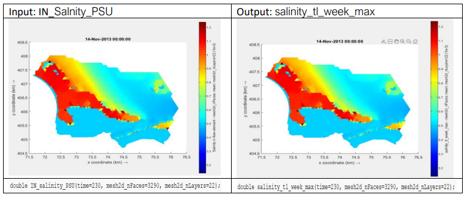
Axis filter rule
FORMAT
- axis_filter_rule:
name: <name_of_rule_in_text>
description: <description_of_rule_in_text>
layer_number: <integer_nr_of_layer>
axis_name: <name_of_axis_applied>
layer_number: <integer_nr_of_layer_in_axis_applied>
input_variable: <one_3D_input_variable_name>
output_variable: <one_output_variable_name>
The axis filter rule is close to the layer_filter_rule, however it allows for filtering on any axis present in the data. This allows for the selection of a specific time step, spatial cell or other data axis value.
The rule needs to be applied to an existing 2D/3D variables with or without time axis. A new 2D/3D variable with or without time axis is created when the rule is executed, with the exception of the axis that was filtered upon.
#EXAMPLE : Select only the salinity in the cell for the channel entrance from the faces
- axis_filter_rule:
name: Filter face of channel entrance (13th face cell)
description: Filter face of channel entrance (13th face cell)
axis_name: mesh2d_nFaces
layer_number: 13
input_variable: IN_salinity_PSU
output_variable: salinity_PSU_channel_entrance
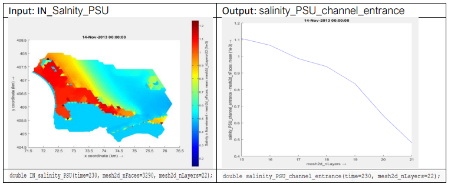
Including data from another YAML file
It is possible to include data in the YAML file that originates from another file. At the moment this is only applicable to another YAML file. This can be useful for storing large classification_rule tables in a separate file (for a better overview of the work file), but this functionality is not limited to that specific rule.
Here is the original rule:
#EXAMPLE : Original
# This is a simplified example, only top layer of flow velocity and chloride was used and year statistics
- classification_rule:
name: classification for aquatic plants
description: classification for aquatic plants based on water depth, flow velocity and chloride.
criteria_table:
- ["output", "MIN_water_depth_mNAP", "MAX_flow_velocity", "MAX_chloride"]
- [ 1 , "<0.10" , "-" , "-"] # too dry
- [ 2 , ">4.0" , "-" , "-"] # too deep
- [ 3 , "-" , "-" , ">400"] # too salty
- [ 4 , "-" , ">1.5" , "-"] # too fast flowing
- [ 5 , "0.10:4.0" , "0.0:1.5" , "0:400"] # perfect for aquatic plants
And this is the rule while making using of an inclusion from another file:
#EXAMPLE : Original
# This is a simplified example, only top layer of flow velocity and chloride was used and year statistics
- classification_rule:
name: classification for aquatic plants
description: classification for aquatic plants based on water depth, flow velocity and chloride.
criteria_table: !include tables/aquatic_plant_criteria.yaml
input_variables: ["MIN_water_depth_mNAP", "MAX_flow_velocity", "MAX_chloride"]
output_variable: aquatic_plant_classes
And this is the included file from tables/aquatic_plant_criteria.yaml:
- ["output", "MIN_water_depth_mNAP", "MAX_flow_velocity", "MAX_chloride"]
- [ 1 , "<0.10" , "-" , "-"] # too dry
- [ 2 , ">4.0" , "-" , "-"] # too deep
- [ 3 , "-" , "-" , ">400"] # too salty
- [ 4 , "-" , ">1.5" , "-"] # too fast flowing
- [ 5 , "0.10:4.0" , "0.0:1.5" , "0:400"] # perfect for aquatic plants
Ended: User manual
Examples ↵
VKZM (3D) case on water level and chloride policy
Based on the criteria set in the “Waterakkoord” by RWS the water level in Lake Volkerak is not allowed to exceed under normal conditions 0.15 m NAP or go lower than -0.10 m NAP. In addition to this threshold the chloride level should not exceed 450 mg/l (between mid-March and mid-September, as measured at “Bathse burg”). This case was simplified by testing that the chloride level does not exceed 450 mg/l at any moment in the year in the top layer of the model. The dry embankment area and islands included in the model were not excluded from assessment (hence is indicated as where water level is too high in the result).
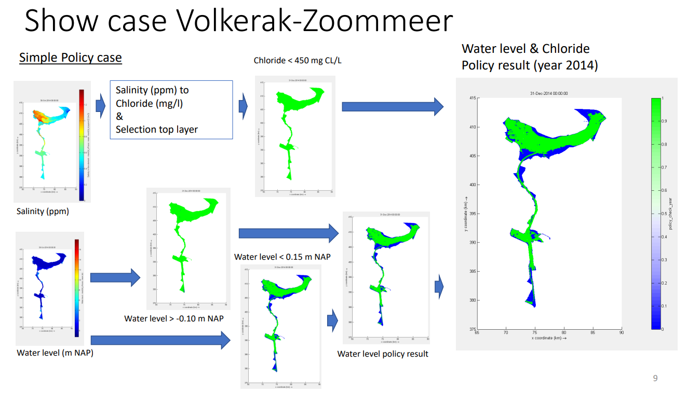
Meuse (2D) case on Potamogeton spp. habitat suitability
Based on the knowledgerules available through the KRW-Verkenner Rijkswateren the aquatic plant species Long-leaf pond weed (Potamogeton nodosus) and Sago pondweed (Potamogeton spectinatus) the criteria for flow velocity and water depth were applied to a predictive hydrodynamic scenario of the Meuse river. Based on these knowledge rules the habitat suitability for both species was assessed. The results of P. nodosus has been shown below.
| WetenschappelijkeNaam | Compartiment | VariabeleNaam | Eenheid | Ondergrens | Bovengrens |
|---|---|---|---|---|---|
| Potamogeton nodosus | Omgeving | GemDiepte | m | 0,05 | 2 |
| Potamogeton nodosus | Water | Stroomsnelheid | m/s | 0 | 2 |
| Potamogeton nodosus | Water | Droogval | Categorie | 1 | 2 |
| Potamogeton pectinatus | Omgeving | GemDiepte | m | 0,05 | 10 |
| Potamogeton pectinatus | Water | Stroomsnelheid | m/s | 0 | 2,5 |
| Potamogeton pectinatus | Water | Droogval | Categorie | 1 | 2 |
Habitat suitability criteria for flow velocity, water depth and desiccation for Potamogeton nodosus and Potamogeton pectinatus.
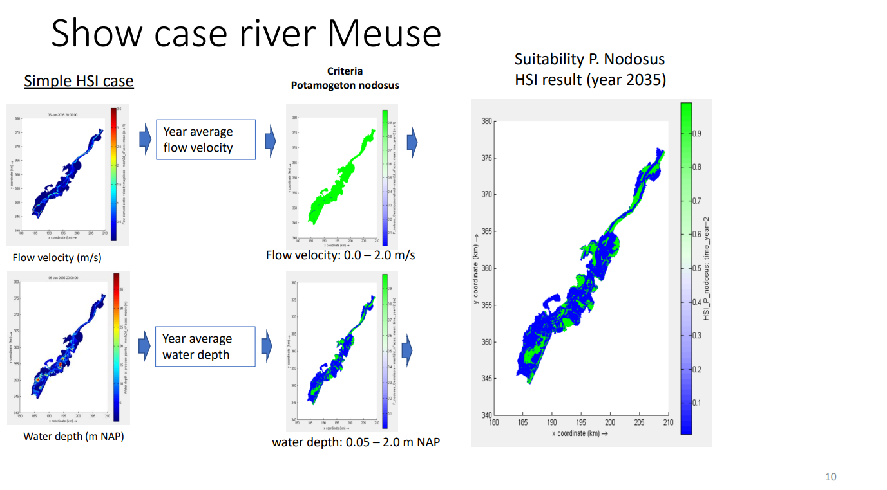
Ended: Examples
API reference ↵
Business ↵
Application
Module for Application class
!!! classes Application
Application
Application for running command-line
Source code in business/application.py
class Application:
"""Application for running command-line"""
# get version
APPLICATION_VERSION = read_version_number()
APPLICATION_NAME = "D-EcoImpact"
# separate version into major, minor and patch:
APPLICATION_VERSION_PARTS = list(map(int, APPLICATION_VERSION.split(".", 2)))
def __init__(
self,
logger: ILogger,
da_layer: IDataAccessLayer,
model_builder: IModelBuilder,
):
"""Creates an application based on provided logger, data-access layer
and model builder
Args:
logger (ILogger): Logger that takes care of logging
da_layer (IDataAccessLayer): data-access layer for reading/writing
model_builder (IModelBuilder): builder for creating a model based on
IModelData
"""
self._logger = logger
self._da_layer = da_layer
self._model_builder = model_builder
def run(self, input_path: Path):
"""Runs application
Args:
input_path (Path): path to input file
"""
try:
# show application version
self._logger.log_info(f"Application version: {self.APPLICATION_VERSION}")
# read input file
model_data: IModelData = self._da_layer.read_input_file(input_path)
str_input_version = "".join([str(x) + "." for x in model_data.version])[:-1]
self._logger.log_info(f"Input file version: {str_input_version}")
# check version:
error_msg = (
f"Application version {self.APPLICATION_VERSION} is older"
" than version from input file {str_input_version}"
)
warning_msg = (
f"Application version {self.APPLICATION_VERSION} is older"
" than version from input file {str_input_version}"
)
# major version (app) should be equal or larger then input version --> error
if self.APPLICATION_VERSION_PARTS[0] < model_data.version[0]:
self._logger.log_error(error_msg)
# minor version (app) should be equal or larger then input version --> warn
elif self.APPLICATION_VERSION_PARTS[1] < model_data.version[1]:
self._logger.log_warning(warning_msg)
# build model
model = self._model_builder.build_model(model_data)
# run model
_ModelRunner.run_model(model, self._logger)
# write output file
if model.status == _ModelStatus.FINALIZED:
settings = OutputFileSettings(
self.APPLICATION_NAME, self.APPLICATION_VERSION
)
settings.variables_to_save = model_data.output_variables
self._da_layer.write_output_file(
model.output_dataset, model_data.output_path, settings
)
except Exception as exc: # pylint: disable=broad-except
self._logger.log_error(f"Exiting application after error: {exc}")
__init__(self, logger: ILogger, da_layer: IDataAccessLayer, model_builder: IModelBuilder)
special
Creates an application based on provided logger, data-access layer and model builder
Parameters:
| Name | Type | Description | Default |
|---|---|---|---|
logger |
ILogger |
Logger that takes care of logging |
required |
da_layer |
IDataAccessLayer |
data-access layer for reading/writing |
required |
model_builder |
IModelBuilder |
builder for creating a model based on |
required |
Source code in business/application.py
def __init__(
self,
logger: ILogger,
da_layer: IDataAccessLayer,
model_builder: IModelBuilder,
):
"""Creates an application based on provided logger, data-access layer
and model builder
Args:
logger (ILogger): Logger that takes care of logging
da_layer (IDataAccessLayer): data-access layer for reading/writing
model_builder (IModelBuilder): builder for creating a model based on
IModelData
"""
self._logger = logger
self._da_layer = da_layer
self._model_builder = model_builder
run(self, input_path: Path)
Runs application
Parameters:
| Name | Type | Description | Default |
|---|---|---|---|
input_path |
Path |
path to input file |
required |
Source code in business/application.py
def run(self, input_path: Path):
"""Runs application
Args:
input_path (Path): path to input file
"""
try:
# show application version
self._logger.log_info(f"Application version: {self.APPLICATION_VERSION}")
# read input file
model_data: IModelData = self._da_layer.read_input_file(input_path)
str_input_version = "".join([str(x) + "." for x in model_data.version])[:-1]
self._logger.log_info(f"Input file version: {str_input_version}")
# check version:
error_msg = (
f"Application version {self.APPLICATION_VERSION} is older"
" than version from input file {str_input_version}"
)
warning_msg = (
f"Application version {self.APPLICATION_VERSION} is older"
" than version from input file {str_input_version}"
)
# major version (app) should be equal or larger then input version --> error
if self.APPLICATION_VERSION_PARTS[0] < model_data.version[0]:
self._logger.log_error(error_msg)
# minor version (app) should be equal or larger then input version --> warn
elif self.APPLICATION_VERSION_PARTS[1] < model_data.version[1]:
self._logger.log_warning(warning_msg)
# build model
model = self._model_builder.build_model(model_data)
# run model
_ModelRunner.run_model(model, self._logger)
# write output file
if model.status == _ModelStatus.FINALIZED:
settings = OutputFileSettings(
self.APPLICATION_NAME, self.APPLICATION_VERSION
)
settings.variables_to_save = model_data.output_variables
self._da_layer.write_output_file(
model.output_dataset, model_data.output_path, settings
)
except Exception as exc: # pylint: disable=broad-except
self._logger.log_error(f"Exiting application after error: {exc}")